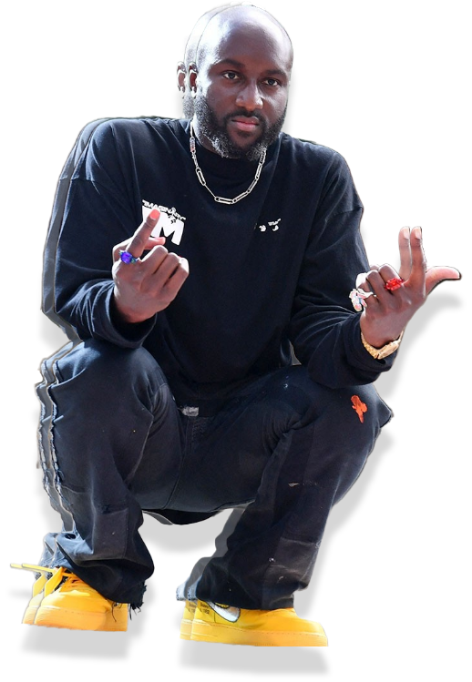

PHILOSOPHY

3 percent approach
3% 접근법
"오리지널에서 3%만 수정을 하면 그것은 완전히 새로운 것이 된다"라는 이 접근은,
3%를 바꾼 아이템은 새로운 영역으로 확장되지만,
동시에 특이하거나 낯설지 않고 익숙한 느낌을 준다는 거죠.

버질 아블로는 자신의 디자인 철학과 표절 논란에 대한 입장을 밝혔다. 우선, 그는 자신의 디자인 철학에서 중요하게 생각하는 것 중 하나로 ‘유연성’을 꼽았다.
“무장지대에 있는 것처럼, 그저 중간에 속하는 것이 좋았다” 라고 운을 띄운 아블로는 “운동선수, 스케이트보더, 우등생 등 어느 그룹과도 거리낌 없이 같이 점심을 먹는 학생이었다”라며 어릴 적부터 열린 사고를 가졌다고 자신을 설명했다.
그는 “요즘의 10대는 인스타그램에서 고스 스타일을 선보이다가도 다음 주가 되면 일본의 하라주쿠 스타일을 선보인다”라며 ‘요즘 애들’의 자유분방하고 유연한 취향에 엄지를 치켜세웠다.
이렇듯, 자유로운 사고를 가진 그도 처음 일을 시작했을 때 엄청난 불안감을 느꼈다고 한다. 그는 “마르지엘라나 레이 가와쿠보의 수준에 도달해야지만 잘한다고 생각했다. 마치 둥근 구멍 안에 박힌 네모 못처럼, 패션 디자이너라는 직업이 나와 맞지 않는다고 생각했다”라고 말했다. 하지만 아블로는 기존의 디자이너들과 다르다는 점을 두려워하기보다 오히려 그것을 받아들였을 때 더는 잠을 설치지 않았다고 말했다.
아블로의 명성과 영향력이 점점 커지는 것만큼, 그의 자질을 논하는 비평가가 늘어났다. 특히, 그들은 아블로가 독창성이 부족하다고 비판했다. 하지만 그는 이에 대해 기존에 관점에서 벗어난, 자신의 디자인 철학을 설명하며 이러한 비판에 맞섰다. “제게 디자인이란 이야기할 가치가 있는 모든 것에서 부터 시작됩니다. 하지만 이전에 없던 다른 선 하나를 종이에 그리는 것에만 초점을 맞추는 것은 문화를 크게 발전시키지 못한다고 생각합니다. 저는 오히려 가치 있는 것을 ‘강조’하는 것에 집중하는 편이죠. 제가 협업을 진행하거나 레퍼런스를 많이 활용하는 것도 그 이유 중 하나이며, 나의 작업물을 완성하는 요소이기도 합니다.”
이렇듯, 자유로운 사고를 가진 그도 처음 일을 시작했을 때 엄청난 불안감을 느꼈다고 한다. 그는 “마르지엘라나 레이 가와쿠보의 수준에 도달해야지만 잘한다고 생각했다. 마치 둥근 구멍 안에 박힌 네모 못처럼, 패션 디자이너라는 직업이 나와 맞지 않는다고 생각했다”라고 말했다. 하지만 아블로는 기존의 디자이너들과 다르다는 점을 두려워하기보다 오히려 그것을 받아들였을 때 더는 잠을 설치지 않았다고 말했다.
아블로의 명성과 영향력이 점점 커지는 것만큼, 그의 자질을 논하는 비평가가 늘어났다. 특히, 그들은 아블로가 독창성이 부족하다고 비판했다. 하지만 그는 이에 대해 기존에 관점에서 벗어난, 자신의 디자인 철학을 설명하며 이러한 비판에 맞섰다. “제게 디자인이란 이야기할 가치가 있는 모든 것에서 부터 시작됩니다. 하지만 이전에 없던 다른 선 하나를 종이에 그리는 것에만 초점을 맞추는 것은 문화를 크게 발전시키지 못한다고 생각합니다. 저는 오히려 가치 있는 것을 ‘강조’하는 것에 집중하는 편이죠. 제가 협업을 진행하거나 레퍼런스를 많이 활용하는 것도 그 이유 중 하나이며, 나의 작업물을 완성하는 요소이기도 합니다.”